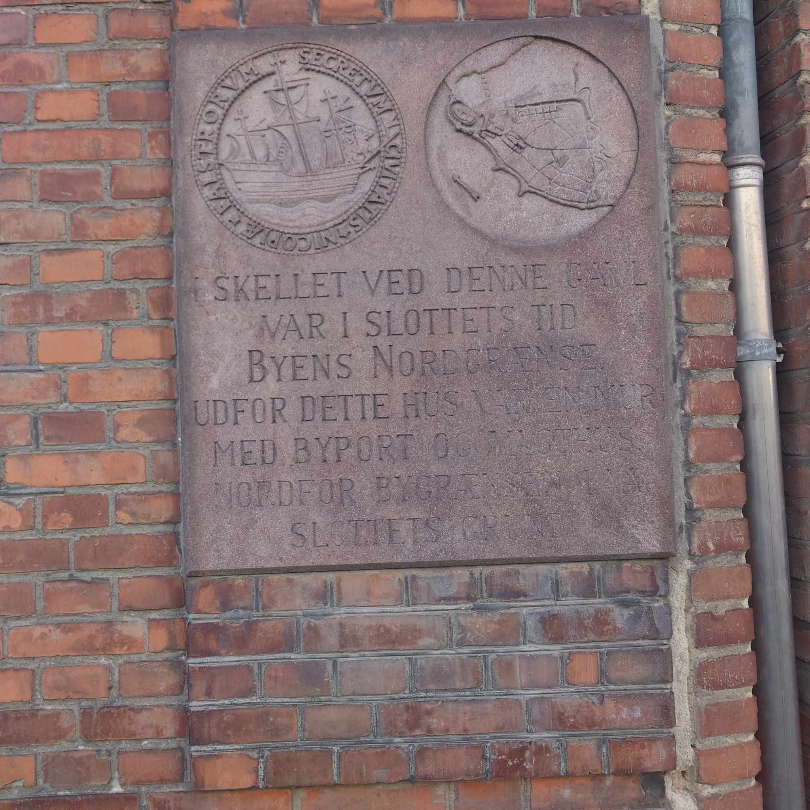

<!DOCTYPE html>
<html lang="en">
<head>
    <meta charset="UTF-8">
    <title>Title</title>
    <link rel="stylesheet" href="css.css">
</head>
<body>

</body>
</html><!DOCTYPE html>
<html lang="da">
<head>
    <meta charset="utf-8">

    <title>FindWay</title>

    <meta name="robots" content="All">
    <meta name="author" content="Udgiver">
    <meta name="copyright" content="Information om copyright">
    <link href="css/styles.css" rel="stylesheet" type="text/css">
    <meta name="viewport" content="width=device-width, initial-scale=1">
    <script src="JS.js"></script>

</head>
<body>

<header class="elegant-header">
    <div class="container">
        <div class="row">
            <div class="col-12 text-center">
                <a href="index.html">
                    
                </a>
            </div>
        </div>
    </div>
</header>
<br>
<div class="image-container text-center">
    
</div>

<div class="container">
    <div id="vandtaarn-header">
        <h1 class="text-center mt-3">puerto</h1>
    </div>
    <div class="header d-flex align-items-center">
        <div class="vandtaarn-text">
            <button id="speakButton">Leer en voz alta en español</button>
            <p id="textToRead">La Cámara de Plata y la Antigua Frontera de la Ciudad
                <br><br>
                En el antiguo barrio, donde las sombras del pasado rozan las aceras de la vida moderna, se encuentra un muro que lleva un mensaje de otra era.
                <br><br>
                En una robusta placa de piedra, cuyas letras han sido desgastadas por el viento y el clima, hay palabras que transmiten un capítulo de la historia de la ciudad que de otro modo habría sido olvidado.
                <br><br>
                La inscripción dice: "La Cámara de Plata. El límite de esta calle fue en tiempos del castillo la frontera norte de la ciudad.
                <br><br>
                Frente a esta casa había un camino, flanqueado por una imponente puerta de la ciudad y que continuaba hacia el norte, lejos de las protecciones del castillo.
                <br><br>
                Esto no era simplemente una demarcación territorial, sino un símbolo de la transición del vibrante corazón de la ciudad a las tranquilas tierras más allá.
                <br><br>
                La palabra 'La Cámara de Plata' despierta curiosidad; sugiere que aquí había una institución importante, quizás parte del castillo ahora desaparecido.
                <br><br>
                Un lugar donde se guardaban valores, o tal vez incluso un lugar de comercio e intercambio, que definía el final geográfico y administrativo de la ciudad bajo la égida del castillo.
            </p>
        </div>
    </div>
</div>


<br>
<br>
<div class="container">
    <div class="row">
        <div class="col-12 text-center">
            <a href="index.html">
                <iframe src="https://www.google.com/maps/embed?pb=!1m18!1m12!1m3!1d575.402389291418!2d11.865744528586776!3d54.769250071933094!2m3!1f0!2f0!3f0!3m2!1i1024!2i768!4f13.1!3m3!1m2!1s0x47ad30f8f89b4d21%3A0xcbd3e2cd9b18c635!2sSlotsgade%2015%2C%204800%20Nyk%C3%B8bing%20Falster!5e0!3m2!1sda!2sdk!4v1712237324572!5m2!1sda!2sdk" width="400" height="200" style="border:0;" allowfullscreen="" loading="lazy" referrerpolicy="no-referrer-when-downgrade"></iframe>            </a>
        </div>
    </div>
</div>

<script>
    // JavaScript-koden for oplæsning
    function toggleReading() {
        // Tjekker om der er nogen tale i gang
        if (!window.speechSynthesis.speaking) {
            // Starter oplæsningen, hvis ingen tale er i gang
            const text = document.querySelector('#textToRead').innerText;
            const speech = new SpeechSynthesisUtterance(text);
            speech.lang = 'es-ES';
            window.speechSynthesis.speak(speech);
            document.querySelector('#speakButton').textContent = 'Detener';
        } else {
            window.speechSynthesis.cancel();
            document.querySelector('#speakButton').textContent = 'Leer en voz alta en español';
        }
    }

    // Tilføjer event listeners når DOM'en er fuldt indlæst
    document.addEventListener('DOMContentLoaded', function () {
        const speakButton = document.querySelector('#speakButton');
        speakButton.addEventListener('click', toggleReading);
        speakButton.textContent = window.speechSynthesis.speaking ? 'Detener' : 'Leer en voz alta en español';
        styleButton(); // Anvender stilændringer
    });

    // Stopper oplæsningen automatisk, når siden forlades eller opdateres
    window.addEventListener('beforeunload', function () {
        if (window.speechSynthesis.speaking) {
            window.speechSynthesis.cancel();
        }
    });

    function styleButton() {
        const button = document.querySelector('#speakButton');
        button.style.backgroundColor = 'red';
        button.style.color = 'white';
        button.style.fontSize = '13px'; // Justeret fra 10px til 20px for bedre læsbarhed
        button.style.padding = '10px 20px';
    }
</script>


<script src="node_modules/bootstrap/dist/js/bootstrap.bundle.min.js"></script>
</body>
</html>
